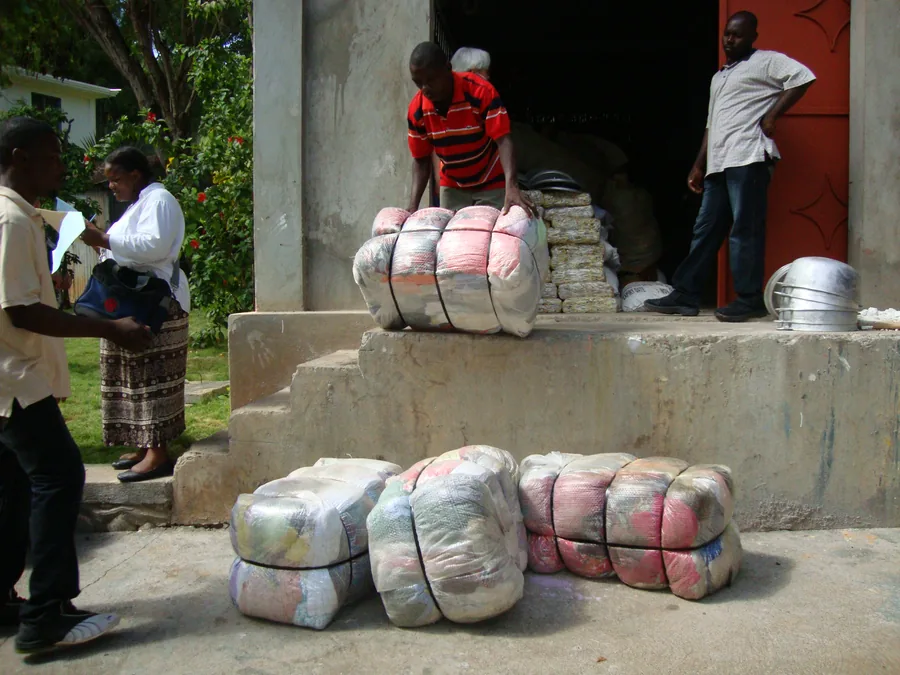
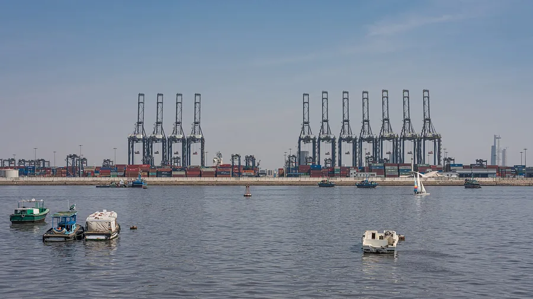
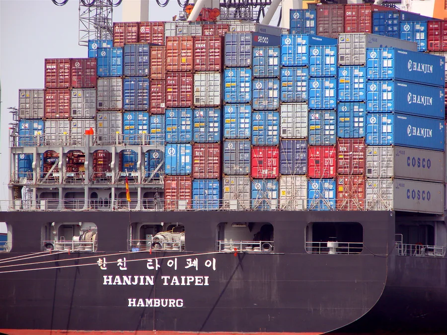
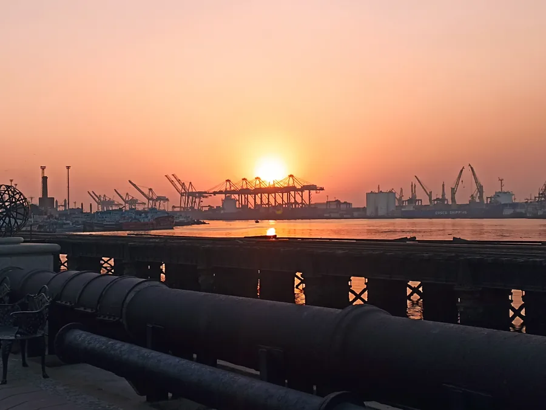
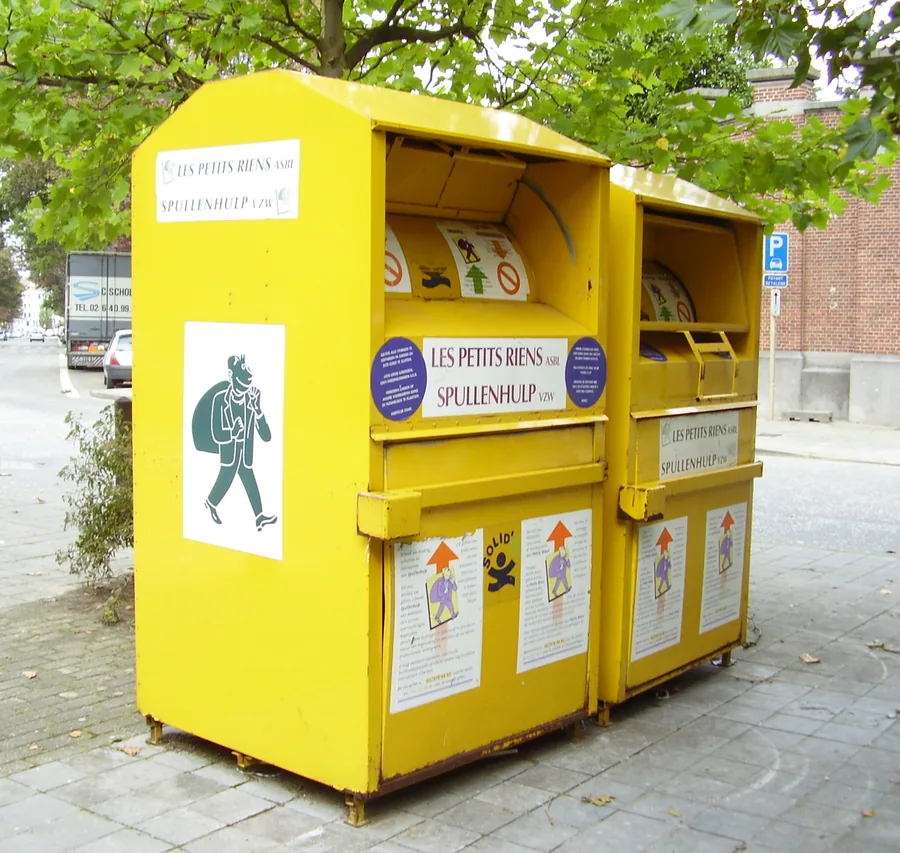
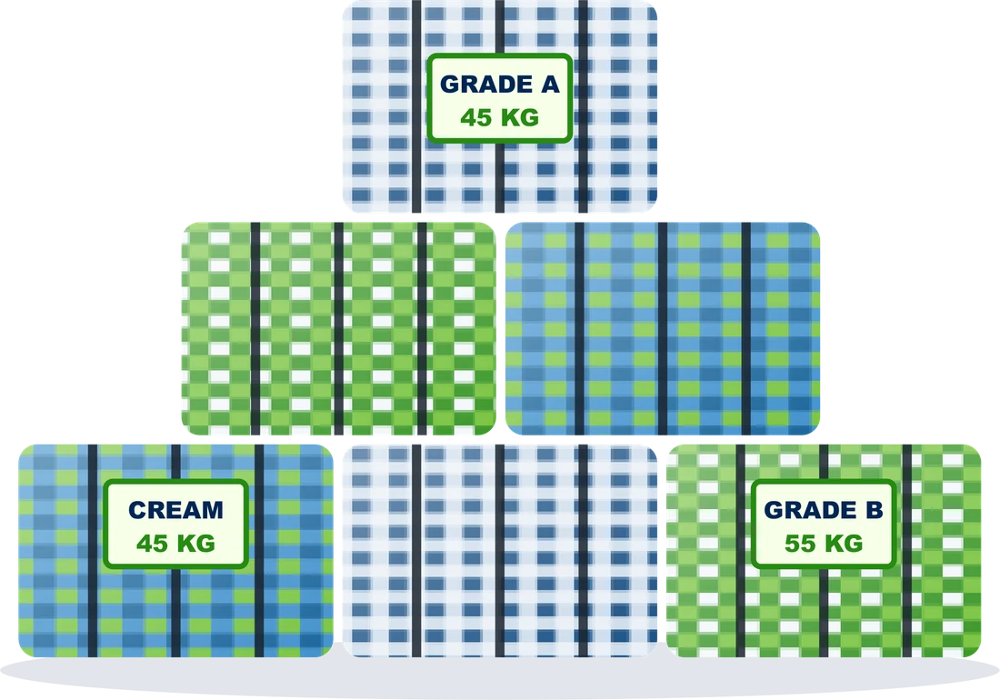

The supply chain in pictures
From European collection points and export ports to the Port of Karachi: the journey of every bale we import.


Pressed, strapped bales of used clothing being unloaded at a warehouse: the standard export unit of our trade.
Photo: Alison McKellar · CC BY 2.0 · source

Container cranes at the Port of Karachi, where our containers arrive, seen from Manora Island.
Photo: A.Savin (WikiPhoto.Space) · Free Art License 1.3 · source

A fully loaded container ship at the Port of Hamburg, one of the main gateways for European exports.
Photo: Photocapy · CC BY-SA 2.0 · source

The Karachi harbour and container terminals at sunset, seen from Port Grand.
Photo: King Eliot · CC BY-SA 4.0 · source

Clothing-collection containers in Brussels: in Europe, reusable clothing is collected, sorted, graded and baled before export.
Photo: Ben2 · CC BY-SA 3.0 · sourcePhotographs by the credited photographers, used under the licences shown (Wikimedia Commons). They illustrate the trade and the ports; they are not photographs of SRTE premises.
Ask for a live video walk-through
Photos and videos of our own Karachi warehouse, stock and container openings are shared with supply partners on request. We are happy to arrange a live video call so you can see our operation for yourself.
